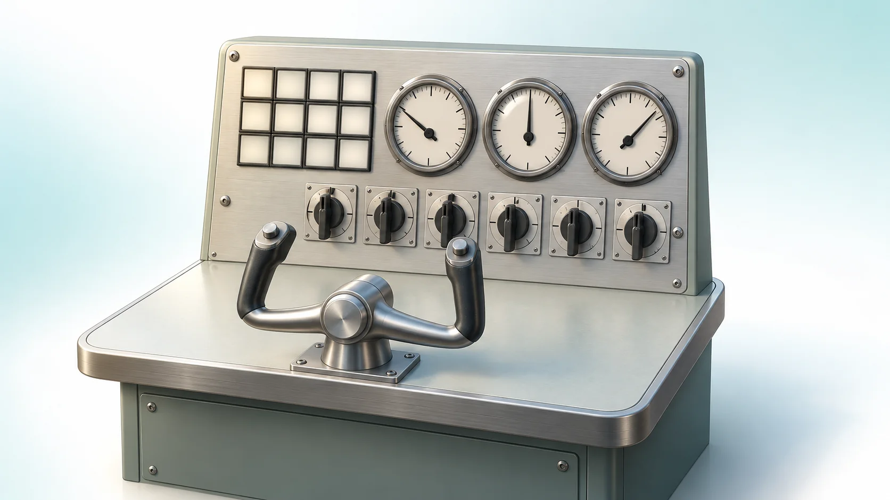
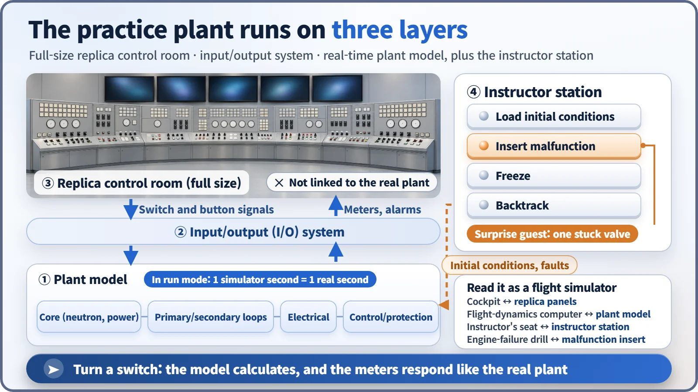
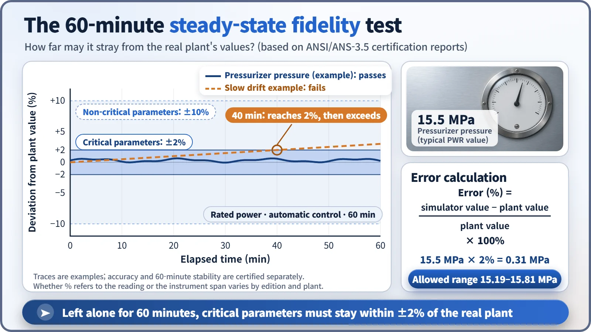

Modeling, Simulation & Computation · 268
How to Shut Down an Engine Without Leaving the Ground — Nuclear Plant Operator Training Simulators
A full-size replica control room, a real-time plant model and an instructor who hides surprises: where nuclear operators practice the accidents no one can stage.

Operators can't wait for a real accident, and nobody can cause one on purpose, so they practice in a full-size replica control room driven by a real-time plant model. The simulator must run in real time and match the reference plant closely, with critical parameters held within about ±2% over a 60-minute steady-state test. [1]
An engine failure that never left the ground
A pre-dawn flight reaches cruising altitude when the left engine warning light flashes. The captain opens the checklist, trades a few words with the first officer, shuts the engine down and lands safely twenty minutes later. When the door opens, there's no runway outside, just an office corridor. It was a flight simulator, and the person who killed the engine was the instructor sitting behind them.
Nuclear power plants have the same kind of facility: the operator training simulator, a fake plant that behaves like the real thing.
The practice plant runs on three parts
It is usually called a full-scope simulator: a full-size copy of the main control room of one specific plant, the reference plant, down to the panel layout, switch shapes, alarm-window positions and alarm sounds. Three parts work in step:
- The plant model calculates the reactor core, the water and steam in the primary and secondary systems, the electrical equipment, and the control and protection logic. Calculation models such as system thermal-hydraulics codes sometimes serve as this engine.
- The input/output system sends switch signals to the model and returns calculated pressures, temperatures and levels to meters, alarms and screens.
- The instructor station loads an initial state such as "100% power, just after refueling," inserts equipment failures without warning, and freezes or rewinds the session.

The facility is not connected to the real plant in any way. Trip the reactor in the simulator, and the real reactor keeps running as if nothing happened.
How real does it have to be?
Instincts built in the simulator have to work unchanged in the real control room, so its fidelity, how closely it matches the plant, is held to a standard. ANSI/ANS-3.5, from the American Nuclear Society, is widely used internationally; first issued in 1985, it has been revised several times. The first condition is real time: one simulator second equals one real second. The second is steady-state accuracy. [2]
Error (%) = (simulator value − actual plant value) ÷ actual plant value × 100%
| Criterion (certification reports citing ANS-3.5-1985) | Tolerance |
|---|---|
| Critical parameters during power operation | within ±2% |
| Non-critical parameters | within ±10% |
| Drift over 60 minutes at rated power, automatic control | less than 2% |
For a pressurized water reactor's pressurizer, typically at about 15.5 MPa (roughly 150 times atmospheric pressure), ±2% means staying between 15.19 and 15.81 MPa. Whether the percentage is taken relative to the reading or to the instrument's scale range differs somewhat between editions of the standard and between plants. [3]

The valve the instructor quietly disabled
Operators practice normal startup, power changes and shutdown, then transients such as an automatic reactor trip or a pump suddenly stopping. The heart of it is accident scenarios, such as a loss-of-coolant accident, a steam generator tube rupture or a loss of offsite power, worked through line by line with the Emergency Operating Procedures (EOPs). The instructor hides twists: a valve the procedure says to open is made to stick, or an instrument shows a bogus reading, and the crew must decide together whether the instrument is wrong or the plant really is behaving that way. Repeating scenes that could never be created deliberately in a real plant is the simulator's true value.
The training is tied to licensing. In South Korea, simulators are used in the licensing exams for Reactor Operators (RO) and Senior Reactor Operators (SRO), and license holders complete refresher training with simulator practice every three years. In the United States, licensed operators take an operating test with simulator scenarios every year. [1] [4]
Not an accident analysis code
Accident analysis codes used for design and licensing also calculate the plant, but they compute the phenomena of interest as precisely as possible, however long it takes. A simulator covers the whole plant broadly, must always keep to real time, and has human hands and judgment inside its calculation loop. That is why simulator results are not used as evidence to demonstrate safety.
Where South Korea's operators practice
Korea Hydro & Nuclear Power (KHNP) runs simulators tailored to each reactor type at its Human Resources Development Institute in Ulsan and at training centers at each nuclear site. In 2023, the simulator for Saeul Nuclear Power Site 2 (Shin Kori Units 5 and 6) passed internationally based performance tests twice, entered full service and trained its first 10 operators, with stronger severe-accident simulation than earlier simulators. [5]
Key takeaways
Nuclear plant operators don't wait for a real accident. They make their mistakes and hit rewind in a real-time replica of their own control room, held to strict fidelity standards, and only then sit down at the real panels.